SmartTools アドオン解説書
SmartID Suite（スマートアイディー スイート） 解説書
版 1.0.0 ／ 2026年11月18日 ／ Blender 5.1.2 用
SmartID Suite は、制作で使う「目印の番号や名前」を 1 つの一覧で管理するアドオンです。オブジェクト ID、マテリアル ID、UV マップ、カラー属性、ジオメトリ属性、頂点グループ、選択セットなどを、一覧の行（項目）として登録します。登録した項目は、選んだオブジェクトへボタン 1 つで付けられます。逆に、今あるオブジェクトから ID を読み取って一覧に足すこともできます。選んだオブジェクトの中身を調べて、その場で名前や番号を直す機能もあります。一覧は JSON ファイルに書き出して、別のファイルで読み込めます。結果は、パス番号・マテリアル・UV マップ・属性・コレクションといった Blender の普通のデータとして残ります。
1. このアドオンでできること
制作で使う ID やチャンネル（UV マップ、属性、グループなど）を一覧で管理し、オブジェクトへまとめて付けたり調べたりできるアドオンです。
- オブジェクト ID・マテリアル ID・UV チャンネル・カラー属性など 12 種類の項目を、1 つの一覧で登録・管理する
- 登録した項目を、選択オブジェクトやシーン内のオブジェクトへまとめて付ける（適用）・外す（解除）
- 項目に一致するオブジェクトや、メッシュのエレメント（面・頂点）を選択する
- シーンや選択オブジェクトにすでにある ID・チャンネルを読み取り、一覧へ足す（同期）
- 選択オブジェクトの中にある ID・マテリアルスロット・UV・属性・グループを一覧で調べ、名前や番号をその場で直す
- UV マップ、カラー属性、ジオメトリ属性をメッシュに作る・有効にする・消す
- ID ごとの色のマテリアル、選択コレクション、ビューレイヤー AOV を作る
- 3D ビューに色付きの枠や印を重ねて、どこに何が付いているかを確かめる（データは変えない）
- 一覧の重複や不足を検証し、結果をテキストに残す
- 一覧を JSON で書き出し・読み込み、CSV で書き出す
- レンダー後の合成で使うオブジェクト ID・マテリアル ID の番号を、ファイル全体で揃える
- 複数のオブジェクトに同じ名前の UV マップやカラー属性をまとめて作る
- 受け取ったファイルにどんな ID や UV が入っているかを一覧で調べる
- 決めた ID の一覧を JSON にして、別のショットや別のファイルでも同じ番号を使う
- 割り当てが正しいかを、3D ビューの色の枠で目で確かめる
ひと目で分かる例
このアドオンを使うと、画面は次のように変わります。くわしい操作は 5 章の各機能の「実例」で説明します。
実例3 つのスザンヌにオブジェクト ID を付けて色分けする（3 つのスザンヌで試した様子）
「オブジェクトID」の項目を 3 つ作り、1 つずつ別のスザンヌへ付けます。ID と一緒に項目の表示色がオブジェクトの色になるので、どれにどの ID を付けたかが目で分かります。
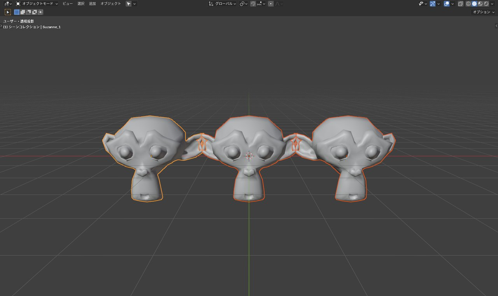
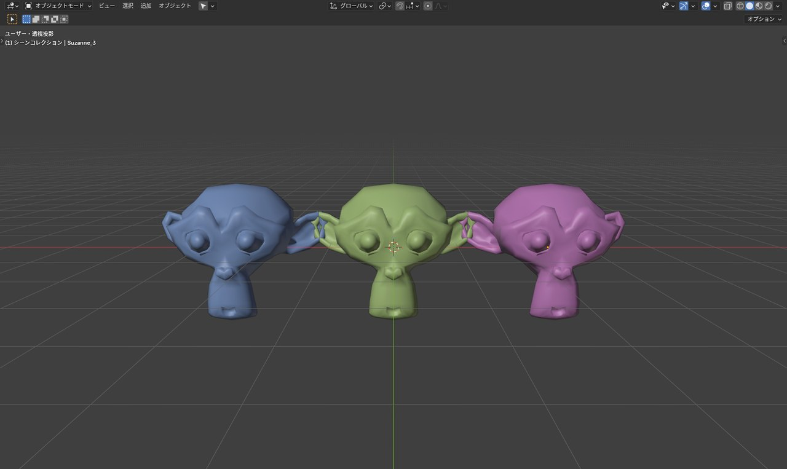
- 「Smart ID」タブ →「ID / チャンネルライブラリ」の「新規項目タイプ」を「オブジェクトID」にする
- 「追加」を押して項目を作る
- 左のスザンヌだけを選び、「選択へ適用」を押す
- 同じように、真ん中と右のスザンヌにも新しい項目を作って付ける
- 色を見る時は、3D ビューの「ビューポートシェーディング」の「カラー」を「オブジェクト」にする
見どころ：付ける前は 3 つとも同じ色ですが、付けた後はスザンヌごとに項目の表示色（ID ごとに違う色）になります。
2. 目玉の機能
このアドオンならではの機能を、図に番号を付けて説明します。図の中の番号と、図の下の一覧の番号が対応しています。図を押すと大きく表示されます。設定の一つ一つは 5 章の各見出しで説明します。
2-1. ID を 1 つの一覧に登録し、選んだ物へボタン 1 つで付けるいちばんの売り
オブジェクト ID・マテリアル ID・UV チャンネル・カラー属性など 12 種類の「目印の番号や名前」を、サイドバーの 1 つの一覧で管理します。登録した項目は、選んだオブジェクトへボタン 1 つで付けられます。付けた結果は、パス番号・マテリアル・UV マップ・属性・コレクションといった Blender の普通のデータとして残ります。逆に、今あるオブジェクトから ID を読み取って一覧に足すこともできます。一覧は JSON ファイルに書き出せるので、別のショットや別のファイルでも同じ番号を使えます。
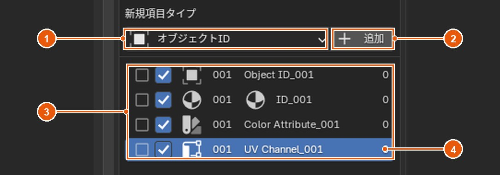
- 1「新規項目タイプ」：「追加」で作る項目の種類を選ぶ。「オブジェクトID」「マテリアルID」「マップチャンネル」「UVチャンネル」「カラー属性」「ジオメトリ属性」「UDIMタイル」「選択セット」「レンダーAOV」「Cryptomatteタグ」「ウェイトグループ」「カスタムID」の 12 種類
- 2「追加」：選んだ種類の項目を一覧の最後に足す。ID 番号は同じ種類の中で次に空いている番号になり、名前は「命名プロファイル」の決まりで自動で付く
- 3一覧の行：左から、複数選択のチェック、有効のチェック、種類の印と ID 番号（3 けた）、名前が並ぶ。名前は行の上で直接直せる
- 4右の数：項目に一致した物の数。「ライブラリ判定範囲」を選択に絞った時は「選択の中の数/全体の数」で出る（図は「シーンオブジェクト」なので全体の数だけ）
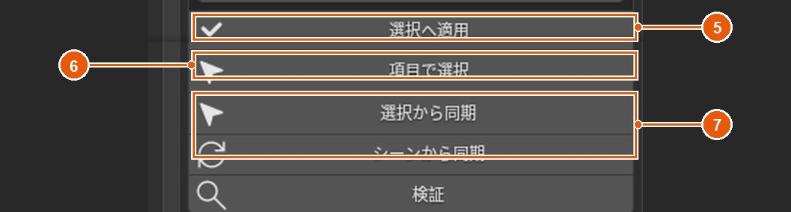
- 5「選択へ適用」：選んだ項目を、「割り当て設定」の「対象範囲」のオブジェクト（初めは選択したオブジェクト）へ付ける。無効やロック中の項目は付けない
- 6「項目で選択」：選んだ項目に一致するオブジェクトを選択する
- 7「選択から同期」「シーンから同期」：選んでいる物、またはシーン全体を調べ、まだ一覧に無い ID・チャンネル・属性・グループを項目として足す
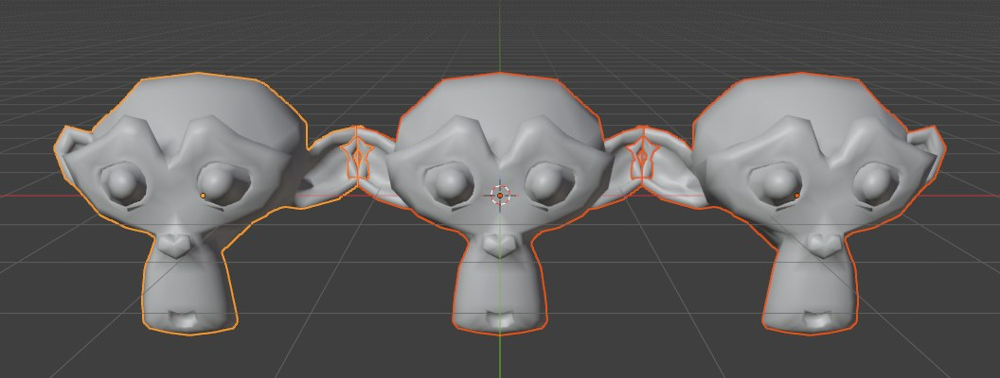


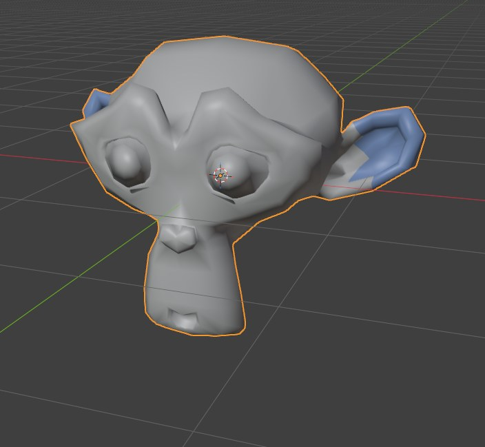
- 3D ビューのサイドバー（N キー）の「Smart ID」タブを開き、「ID / チャンネルライブラリ」の ① で種類を選んで、② の「追加」を押す。
- 付けたいオブジェクトを選ぶ。面だけに付ける時は、編集モードで面を選び、「割り当て設定」の「マテリアル対象」を「選択した面」にする。
- 一覧で項目の行を選び、⑤ の「選択へ適用」を押す。
- 色で確かめる時は、3D ビューの「ビューポートシェーディング」の「カラー」を「オブジェクト」にする。
- すでに ID が付いたファイルを受け取った時は、⑦ の「シーンから同期」で、中にある ID やチャンネルを一覧に読み取れる。
- いちばん左のチェックで複数の行を選ぶと、⑤ や ⑥ はチェックした行をまとめて処理する。
- 「割り当て設定」の「Blenderパス番号へ書き込み」は初めから入っていて、オブジェクト ID とマテリアル ID の番号が Blender のパス番号にも書かれる。外す時は「選択から解除」を押す。
- 「選択 / 割り当て操作」の「エレメント選択」を押すと、マテリアル ID が付いた面や、頂点グループの頂点を選び直せる。
くわしい設定：5-2. ID / チャンネルライブラリ、5-4. 割り当て設定、5-5. 選択 / 割り当て操作、5-9. 検証 / 読み込み / 書き出し
2-2. どこに何が付いたかを、3D ビューの色の枠と名札で確かめる図で見る
ID が付いた物を、3D ビューで項目の「表示色」の箱で囲み、箱の角に「オブジェクトID: 項目名」のようなラベル（名札）を出します。面に付けた ID は、その面の位置に小さな十字の印で示します。どの物・どの面に何の ID が付いているかが、一覧を見比べなくても画面で分かります。見た目の確認だけなので、マテリアルやメッシュのデータは変えず、レンダー結果にも写りません。
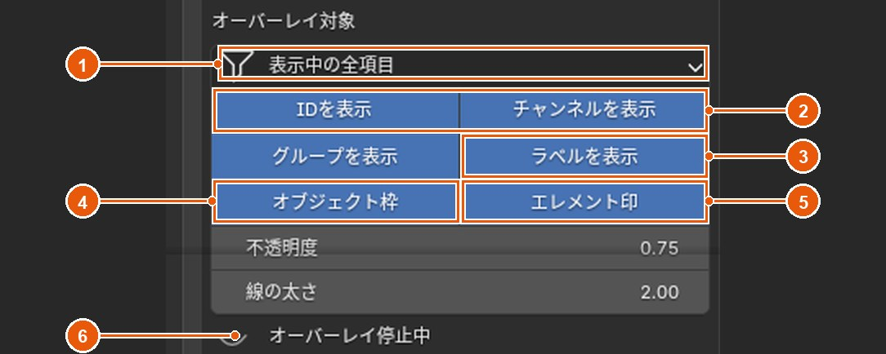
- 1「オーバーレイ対象」：描く行を「アクティブ項目」「表示中の全項目」「検査リスト項目」「表示項目 + 検査リスト」から選ぶ。初めは「表示中の全項目」で、一覧に今出ている有効な行を描く
- 2「IDを表示」「チャンネルを表示」：ID の行と、チャンネル・属性の行を、それぞれ描くかを決める。その下の左の「グループを表示」は、選択セット・頂点グループの行
- 3「ラベルを表示」：枠の角に「オブジェクトID: 項目名」のように種類と名前を出す。文字の色は枠と同じ
- 4「オブジェクト枠」：一致するオブジェクトを、項目の「表示色」の箱で囲む
- 5「エレメント印」：一致する面や頂点の位置に、小さな色の十字を描く（1 つの物につき 80 か所まで）。印は確認用で、選択ではない
- 6「オーバーレイ停止中」：今は描いていないという表示。「常時機能切り替え」の「オーバーレイ有効」を「有効」にすると「オーバーレイ表示中」に変わる
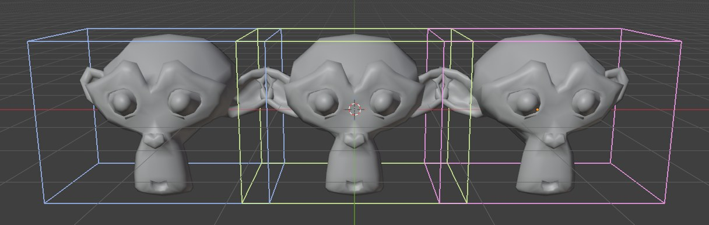
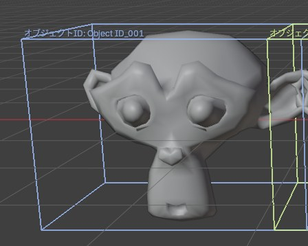
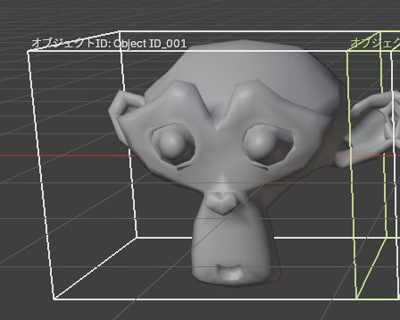


- 「常時機能切り替え」で「オーバーレイ有効」のボタンを押して「有効」にする。
- 「確認オーバーレイ」を開き、④ の「オブジェクト枠」、⑤ の「エレメント印」、③ の「ラベルを表示」から、出したい物を入れる。
- シーン全部の物に枠を出す時は、「ID / チャンネルライブラリ」の「ライブラリ判定範囲」を「シーンオブジェクト」にする（選択やアクティブの時は、その範囲の物にだけ枠が出る）。
- 枠の色を変える時は、一覧で項目を選び、「選択項目」の「表示色」を変える。
- 枠・ラベル・印は 3D ビューにだけ描かれ、レンダー結果には写らない。マテリアルやメッシュのデータも変えない。
- ① を「検査リスト項目」にすると、「選択オブジェクト検査」の一覧の行（UV・属性など）も描ける。表示色の無い行は、名前から作った色になる。
- 「不透明度」と「線の太さ」で、色の濃さと枠の線の太さを変えられる。
くわしい設定：5-8. 確認オーバーレイ、5-1. 常時機能切り替え、5-3. 選択項目
2-3. 選んだ物の中身を一覧で調べ、その場で名前を直す図で見る
選んだオブジェクトの中にある ID・マテリアルスロット・UV マップ・属性・グループ・SmartID Suite の記録を、1 つの一覧にします。受け取ったファイルにどんな ID や UV が入っているかが、すぐに分かります。行を選べば、名前や ID 番号をその場で直して、実際のデータへ書き戻せます。消してはいけない属性などの行は「保護中」になり、削除の操作をしても変わりません。
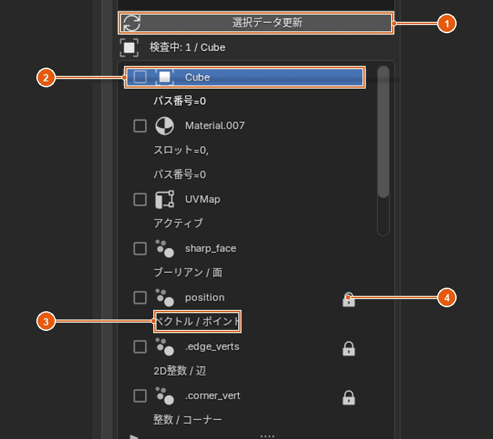
- 1「選択データ更新」：今の選択を調べて一覧を作り直す。下に「検査中: 1 / Cube」のように、調べた物の数と名前が出る
- 2一覧の行：左から、複数選択のチェック、種類の印、名前、値が並ぶ。押して選ぶと、下の「選択データ項目」に詳しい情報が出る
- 3値の欄：「パス番号=0」「スロット=0, パス番号=0」「ベクトル / ポイント」のように、値の種類と置き場所を日本語で出す
- 4鍵の印：消してはいけない行（「保護中」）の印。削除の操作をしても消えない
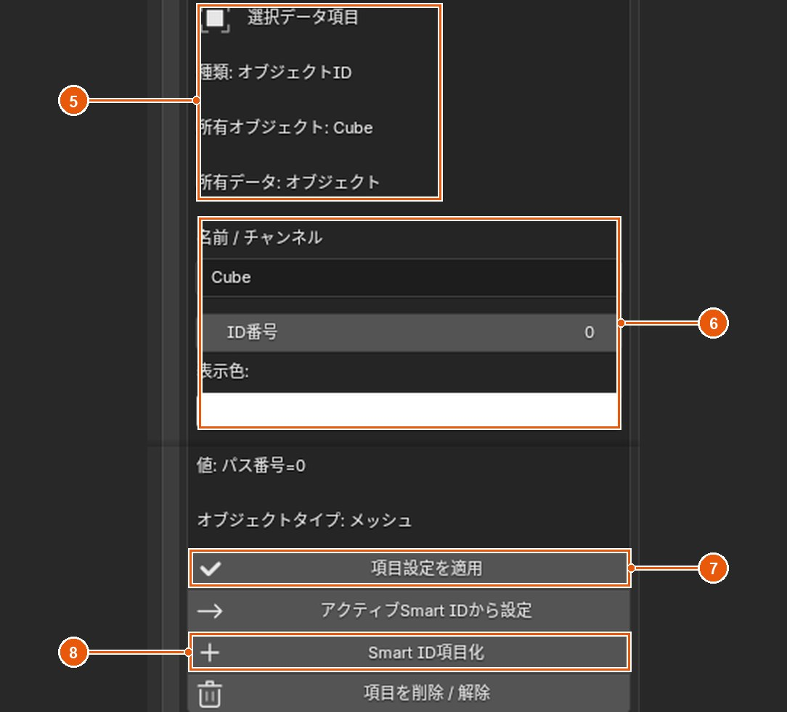
- 5「選択データ項目」：選んだ行の種類、「所有オブジェクト」「所有データ」、今の値のまとめが出る
- 6直せる欄：「名前 / チャンネル」「ID番号」「表示色」など、行の種類に応じて出る。UV マップの行では「アクティブ」「レンダー」も出る
- 7「項目設定を適用」：⑥ で直した内容を、行が表す Blender のデータへ書き戻す
- 8「Smart ID項目化」：この行から、ライブラリの一覧の項目を作る。すでにあればその項目を選ぶ
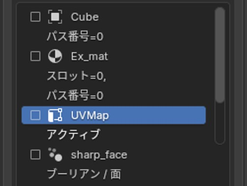
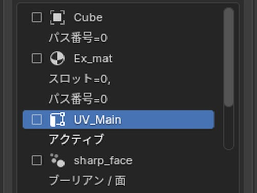
- 調べたいオブジェクトを選び、「選択オブジェクト検査」を開いて ① の「選択データ更新」を押す。
- 一覧で直したい行を押して選ぶ。
- ⑥ の欄で名前や ID 番号を直し、⑦ の「項目設定を適用」を押す。
- 「検査検索」に文字を入れると、名前・値・メモを探せる。日本語でも、Blender の英語の名前でも当たる。
- 「常時機能切り替え」の「検査の自動更新」を「有効」にすると、選択を変えるたびに一覧が作り直される。初めは「無効」なので ① を押す。
- 「アクティブSmart IDから設定」を押すと、ライブラリの一覧で選んでいる項目の設定を、この行のデータだけに当てられる。
3. 準備
アドオンの入れ方・画面を日本語にする方法・N パネルと「？」ヘルプの共通の使い方は、「SmartTools 全体仕様書」にまとめています。先にそちらの 2〜5 章を読んでください。
| 入れる ZIP | SmartIDSuite_1.0.0.zip |
|---|---|
| Blender の画面での名前 | Smart ID |
| 動く Blender | 5.1.2 |
4. 画面の場所
サイドバー（N パネル）の「Smart ID」タブに出ます。3D ビューのほか、画像エディター、ノードエディター、ビデオシーケンサー、ムービークリップエディター、ドープシート、グラフエディター、NLA エディター、テキストエディター、ファイルブラウザー、スプレッドシートのサイドバーにも、同じ中身のタブが出ます。Smart Tools Manager を入れている時は、どのエディターに出すかがその置き場所の設定に従います。
| 出る画面 | 3D ビューポート、画像エディター（UV エディター）、ノードエディター、ビデオシーケンサー、動画クリップエディター、ドープシート、グラフエディター、NLA エディター、テキストエディター、ファイルブラウザー、スプレッドシート |
|---|---|
| タブ | Smart ID |
| モード | オブジェクトモード |
- インストール、日本語化、N パネルの開き方、「？」ヘルプの共通の使い方は、全体仕様書の共通の章を見てください。
- 3D ビューのサイドバーを開き、右端のタブの中から「Smart ID」を押します。
- 見出しが縦に並びます。使いたい見出しの左の三角、または見出しの名前を押すと開きます。もう一度押すと閉じます。各見出しの右端の「？」を押すと、その見出しの短い説明が出ます。
- 初めは「ID / チャンネルライブラリ」「選択項目」「選択 / 割り当て操作」が開いています。
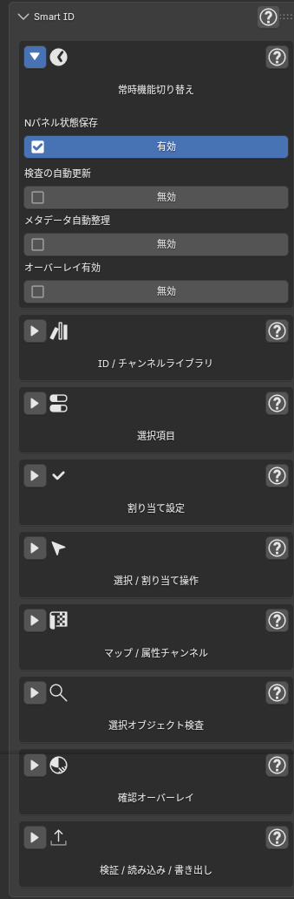
5. 機能の説明
画面の上から順に、見出しごとに説明します。見出しの右の「？」を押すと、同じ内容の説明が画面にも出ます。青い枠の「実例」は、スザンヌなどの簡単なモデルで実際に操作し、3D ビューでの変化を前と後で並べたものです。
5-1. 常時機能切り替え
ボタンを押さなくても裏で動き続ける機能を、1 つずつ入れたり切ったりする欄です。項目名の下のボタンを押すたびに「有効」と「無効」が切り替わります。
場所Smart ID タブのいちばん上の見出しです。初めは閉じています。
| 表示 | 働き |
|---|---|
| Nパネル状態保存 | このタブの設定を、変えたその場で設定ファイル（Smart_ID_Suite.json）に保存するかを決めます。初めは「有効」です。 |
| 検査の自動更新 | オブジェクトの選択を変えた時に、「選択オブジェクト検査」の一覧を自動で作り直し、ライブラリの一覧も今の選択で絞り直します。初めは「無効」です。無効の時は「選択データ更新」や「選択変更：件数更新」を押します。 |
| メタデータ自動整理 | ファイルを開く時・保存する時に、検査の一時的な行と、持ち主のいなくなった SmartID Suite の記録（メタデータ）を自動で片付けます。初めは「無効」です。 |
| オーバーレイ有効 | 3D ビューに確認用の色の枠や印を描くかを決めます。初めは「無効」です。描き方は「確認オーバーレイ」の見出しで決めます。 |
5-2. ID / チャンネルライブラリ
このアドオンの中心になる一覧です。ID やチャンネルを 1 行ずつ「項目」として登録し、選んだ項目をオブジェクトへ付けます。
場所「常時機能切り替え」のすぐ下です。初めから開いています。
| 表示 | 働き |
|---|---|
| 表示タイプ | 一覧に出す項目の種類を絞ります。「すべて」を選ぶと全部出ます。下の検索欄に文字を入れると、項目名・チャンネル名・UV マップ名・属性名・グループ名・書き出しタグ・メモから探して絞り込みます。「表示タイプ」や検索で隠れた行も、選んだままなら「選択へ適用」などの対象のままです。 |
| ライブラリ判定範囲 | 一覧に出す行を、何を基準に決めるかを選びます。「選択したオブジェクト」は今選んでいるオブジェクトに含まれる項目だけ、「アクティブオブジェクト」はアクティブなオブジェクト 1 つに含まれる項目だけを出します。「シーンオブジェクト」は登録した項目をすべて出します。初めは「選択したオブジェクト」です。まだどこにも使っていない項目は、いつでも出ます。レンダーAOV の行はビューレイヤーの物なので、これもいつでも出ます。選んでいる行とチェックした行も、操作ボタンの対象なので、選択に含まれなくても一覧に残ります。選択もアクティブも無い時は、項目を隠さずに全部出します。選択を変えた後は、「選択変更：件数更新」を押すまで全部の行が出ます。右の数字は対象のオブジェクトの数です。 |
| 新規項目タイプ | 「追加」で作る項目の種類を選びます。「オブジェクトID」「マテリアルID」「マップチャンネル」「UVチャンネル」「カラー属性」「ジオメトリ属性」「UDIMタイル」「選択セット」「レンダーAOV」「Cryptomatteタグ」「ウェイトグループ」「カスタムID」の 12 種類です。 |
| 追加 | 選んだ種類で、新しい項目を一覧の最後に足し、その行を選びます。ID 番号は同じ種類の中で次に空いている番号になり（種類が違えば同じ番号になることがあります）、名前とチャンネル名は「命名プロファイル」の決まりで自動で付きます。 |
| 一覧の行 | 左から、いちばん左の複数選択のチェック、有効のチェック、種類の印と ID 番号（3 けた）、名前、一致した数が並びます。種類の文字は、サイドバーを広げると名前の右に出ます。一致した数は、判定範囲の対象がある時は「選択の中の数/全体の数」で出ます。「シーンオブジェクト」の時は全体の数だけが出ます。数は物の数です（チャンネルの行はメッシュチャンネルの数）。マテリアルの行は、そのマテリアルを使う物の数です。選択の数が「-」の時は、選択を変えた後でまだ数え直していないという意味です。ロック中の項目には鍵の印が付きます。名前は行の上で直接直せます（マテリアル ID の行で、マテリアルの名前が出ている時は「選択項目」で直します）。長い名前は省かれます。項目の有効・無効は、行の有効のチェックか「選択項目」の「有効」で切り替えます。 |
| 一覧の下のアイコンボタン | 一覧のすぐ下に横に並ぶ、文字の無いボタンです。左から、項目の削除（Smart ID項目を削除）、複製（Smart ID項目を複製）、上へ移動・下へ移動（Smart ID項目を移動）、件数の数え直し（Smart ID件数を更新）です。マウスを重ねると名前が出ます。ロック中の項目は削除できません。件数の数え直しは、判定範囲が選択かアクティブの時、選んでいる物にあって一覧に無い ID・チャンネルを行として足します。選んでいる行は変わりません。 |
| 選択変更：件数更新 | 選択を変えた後に、一覧のすぐ下に出るボタンです。押すと今の選択で数え直して、選んでいる物に無い行を隠します。選んでいる物にあって一覧に無い ID・チャンネルは行として足します。選んでいる行とチェックした行は、選んでいる物に無くても残ります（数は 0/1 のように出ます）。このまま「選択へ適用」を押すと、その行の項目が付きます。別の行を選ぶかチェックを外すと、残っていた行は隠れます。 |
| 選択数／表示中を選択／選択解除／選択項目を削除 | いちばん左のチェックで選んだ行（複数選択）の数と、その操作です。「表示中を選択」は今見えている行を全部チェックします。「選択解除」はチェックを全部外します。「選択項目を削除」はチェックした行をまとめて消します。ロック中の行は飛ばします。 |
| 選択へ適用 | 選んだ項目を、「割り当て設定」の「対象範囲」のオブジェクトへ付けます。無効やロック中の項目は付けません。 |
| 項目で選択 | 選んだ項目に一致するオブジェクトを選択します。 |
| 選択から同期 | 「ライブラリ判定範囲」の対象（選択中、またはアクティブのオブジェクト）を調べ、まだ一覧にない ID・チャンネル・属性・グループを項目として足します。 |
| シーンから同期 | シーン全体を調べ、まだ一覧にない ID・チャンネル・属性・グループを項目として足します。 |
| 検証 | 一覧の重複 ID、空の名前、足りないチャンネルなどを調べます。結果はテキスト「Smart ID Suite Validation」に書きます。 |
- 「新規項目タイプ」で種類を選び、「追加」を押します。
- 一覧で使いたい項目の行を押して選びます。
- 3D ビューでオブジェクトを選び、「選択へ適用」を押します。
実例3 つのスザンヌにオブジェクト ID を付けて色分けする（3 つのスザンヌで試した様子）
「オブジェクトID」の項目を 3 つ作り、1 つずつ別のスザンヌへ付けます。ID と一緒に項目の表示色がオブジェクトの色になるので、どれにどの ID を付けたかが目で分かります。
- 「Smart ID」タブ →「ID / チャンネルライブラリ」の「新規項目タイプ」を「オブジェクトID」にする
- 「追加」を押して項目を作る
- 左のスザンヌだけを選び、「選択へ適用」を押す
- 同じように、真ん中と右のスザンヌにも新しい項目を作って付ける
- 色を見る時は、3D ビューの「ビューポートシェーディング」の「カラー」を「オブジェクト」にする
見どころ：付ける前は 3 つとも同じ色ですが、付けた後はスザンヌごとに項目の表示色（ID ごとに違う色）になります。
実例選んだ物に合わせて一覧の行が絞られる様子を見る（3 つのスザンヌとサイドバーの一覧で試した様子）
「ライブラリ判定範囲」が「選択したオブジェクト」の時、一覧は選んでいる物に合わせて行を絞ります。項目を作って左のスザンヌに付け、別のスザンヌを選び直すと一覧がどう変わるかを見ます。
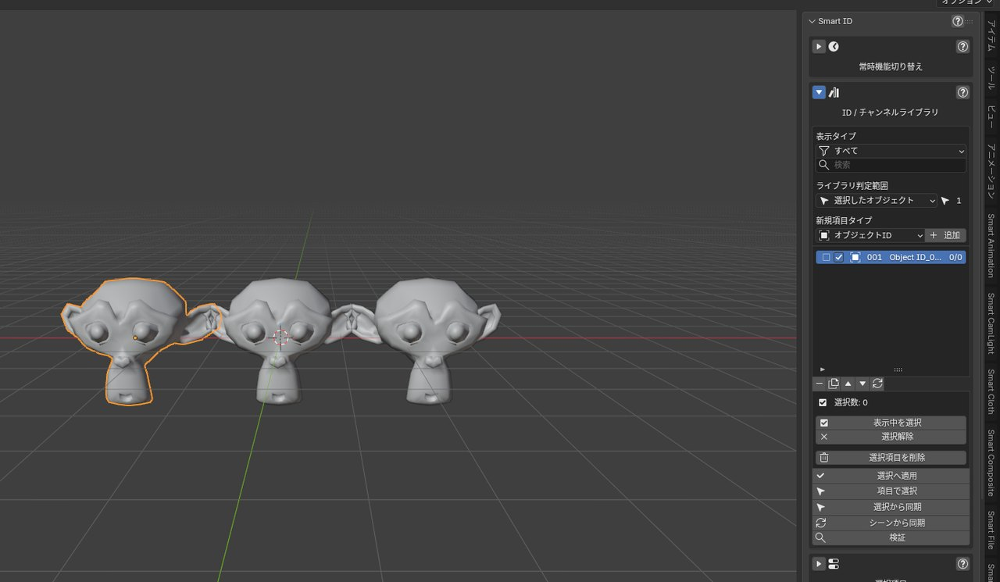
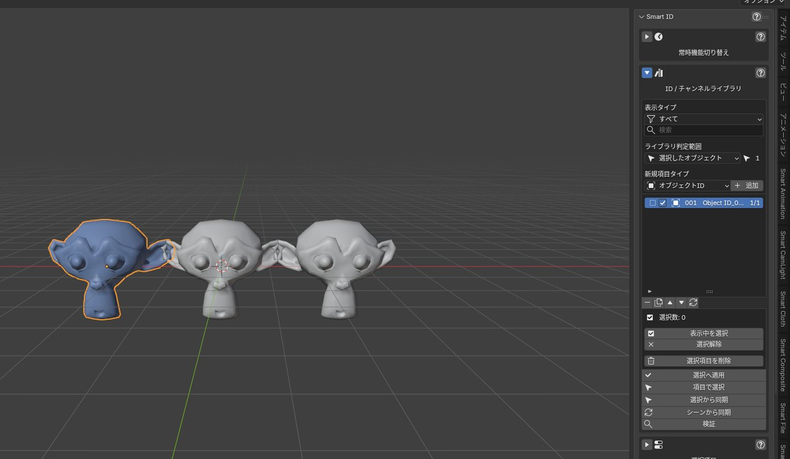
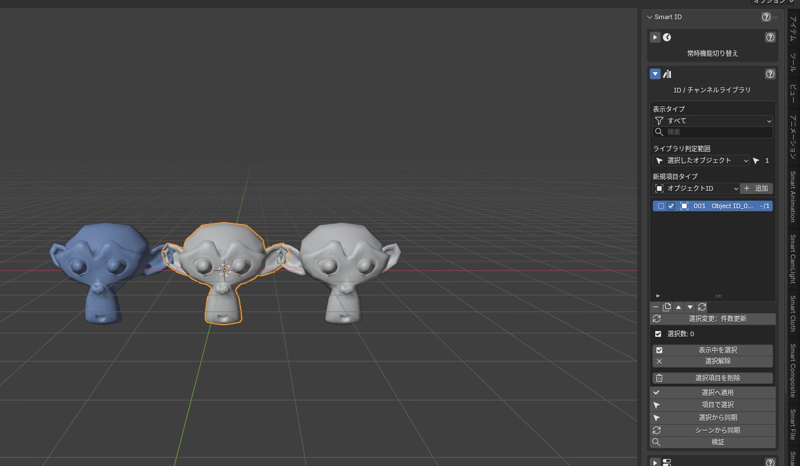
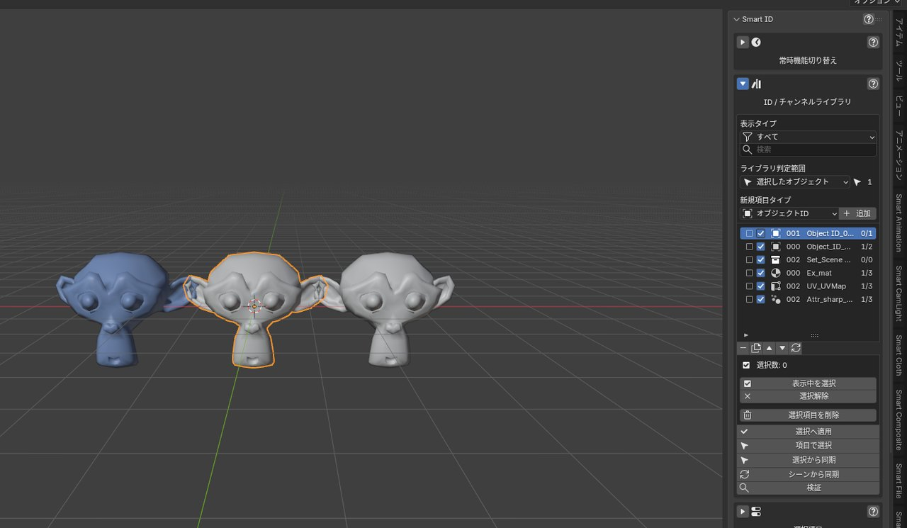
- 左のスザンヌを選び、「ID / チャンネルライブラリ」の「新規項目タイプ」を「オブジェクトID」にして「追加」を押す
- 「選択へ適用」を押す
- 真ん中のスザンヌを選ぶ
- 一覧の下に出た「選択変更：件数更新」を押す
- 色を見る時は、3D ビューの「ビューポートシェーディング」の「カラー」を「オブジェクト」にする
見どころ：行の右の数は「選択の中の数/全体の数」です。選び直した直後は数が「-」になり、全部の行が残ります。「選択変更：件数更新」を押すと、選んでいる物にあって一覧に無かった ID やチャンネルの行が足され、選んでいる物に無い行が隠れます。ただし選んでいる行は、操作の対象なので残ります。
5-3. 選択項目
一覧で選んでいる項目の中身を見て、直す所です。
場所「ID / チャンネルライブラリ」の下です。初めから開いています。項目を選んでいない時は「項目が選択されていません。」と出ます。
| 表示 | 働き |
|---|---|
| 有効 | 切ると、その項目は一覧に残りますが、適用・検証・書き出しで飛ばされます。 |
| ロック | 入れると、削除や書き換えから守られます。変えてはいけない ID に使います。 |
| 種類 | この項目が何を管理するかを選びます。種類によって下の枠の欄が変わります。 |
| 名前 | 一覧や書き出しで使う名前です。 |
| ID番号 | パス番号（レンダーで物を見分ける番号）や並べ替えに使う番号です。 |
| 表示色 | ID マテリアルの色、オブジェクトのビューポートの色、確認オーバーレイの枠とラベルの色、一覧での見分けに使う色です。 |
| マップチャンネル／UVマップ／チャンネル名 | 「マップチャンネル」の項目では 3 つとも、「UVチャンネル」の項目では「UVマップ」と「チャンネル名」が出ます。作る・有効にする UV マップの名前などを決めます。「UVチャンネル」の項目では「UVマップ」が空の時に「チャンネル名」を、「マップチャンネル」の項目では「チャンネル名」が空の時に「UVマップ」を使います。 |
| カラー属性／属性ドメイン | 「カラー属性」の項目で出ます。カラー属性（メッシュに持たせる色の値）の名前と、どこに持たせるかを決めます。カラー属性は「ポイント」か「コーナー」で作られ、ほかを選んだ時は「コーナー」になります。 |
| 属性名／属性タイプ／属性ドメイン | 「ジオメトリ属性」の項目で出ます。属性（メッシュに持たせる値）の名前、値の種類（「浮動小数点」「整数」「ブーリアン」「ベクトル」「浮動小数点カラー」）、どこに持たせるか（「ポイント」「辺」「面」「コーナー」）を決めます。 |
| グループ名 | 「選択セット」「ウェイトグループ」の項目で出ます。作るコレクションや頂点グループの名前です。下に「チャンネル名」も出て、「グループ名」が空の時に使います。 |
| UDIMタイル | 「UDIMタイル」の項目で出ます。1001 のようなタイル番号を記録します。下に「チャンネル名」も出ます。 |
| チャンネル名（レンダーAOV・Cryptomatteタグ・カスタムID） | これらの項目で出る名前の欄です。 |
| 書き出しタグ／メモ | 書き出し先で使う短い名前と、自由に書けるメモです。どの種類でも出ます。 |
| シーン一致／選択一致 | この項目に一致するオブジェクト・マテリアル・チャンネルの数です。「ライブラリ判定範囲」の対象がある時は、「選択一致」の数も出ます。選択を変えた直後は、数え直すまで「選択一致」は出ません。 |
5-4. 割り当て設定
「選択へ適用」で、どこに・どう付けるかを決める見出しです。
場所「選択項目」の下です。初めは閉じています。
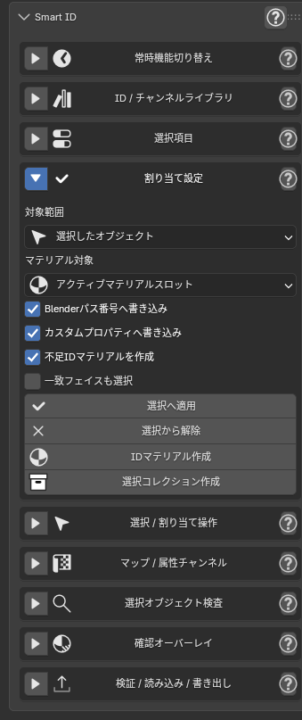
| 表示 | 働き |
|---|---|
| 対象範囲 | 付ける先を「選択したオブジェクト」「アクティブオブジェクト」「シーンオブジェクト」「全メッシュオブジェクト」から選びます。初めは「選択したオブジェクト」です。 |
| マテリアル対象 | マテリアル ID を書くスロットを選びます。「アクティブマテリアルスロット」「全マテリアルスロット」「選択した面」「IDマテリアルを作成して割り当て」があります。 |
| Blenderパス番号へ書き込み | 入れると、オブジェクト ID とマテリアル ID の番号を Blender のパス番号に書きます。初めは入っています。 |
| カスタムプロパティへ書き込み | 入れると、オブジェクトやマテリアルに SmartID Suite の記録を書きます。パス番号が変わっても ID を探せます。初めは入っています。 |
| 不足IDマテリアルを作成 | 入れると、合うマテリアルスロットが無い時に ID マテリアルを作ります。初めは入っています。 |
| 一致フェイスも選択 | 入れると、「項目で選択」の時に、一致するマテリアル ID の面も選びます。初めは切れています。 |
| 選択へ適用／選択から解除 | 項目を対象に付けます／対象から外します。外す時は、種類に応じてパス番号を戻す、スロットを空ける、チャンネルを消す、などをします。 |
| IDマテリアル作成 | 有効になっているマテリアル ID の項目すべてについて、項目の色の ID マテリアルを作るか、作り直します。 |
| 選択コレクション作成 | 「対象範囲」のオブジェクトを、項目の「グループ名」（空なら「チャンネル名」）のコレクションに入れます。コレクションが無ければ作ります。 |
実例選んだ面（耳）だけにマテリアル ID を付ける（スザンヌで試した様子）
編集モードで耳の面を選び、「マテリアル対象」を「選択した面」にして、マテリアル ID を付けます。ID の色のマテリアルが自動で作られ、選んだ面だけに入ります。
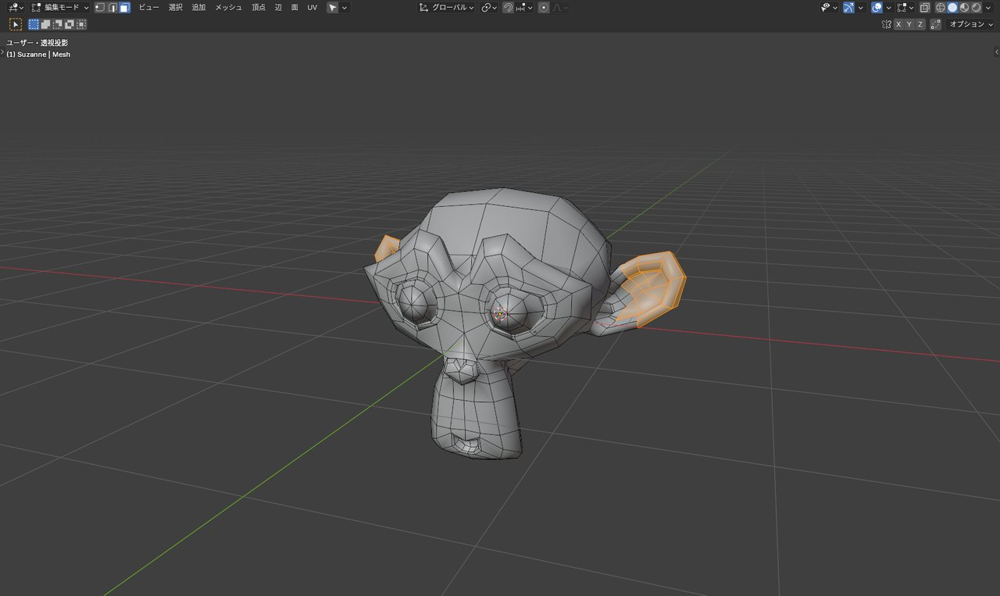
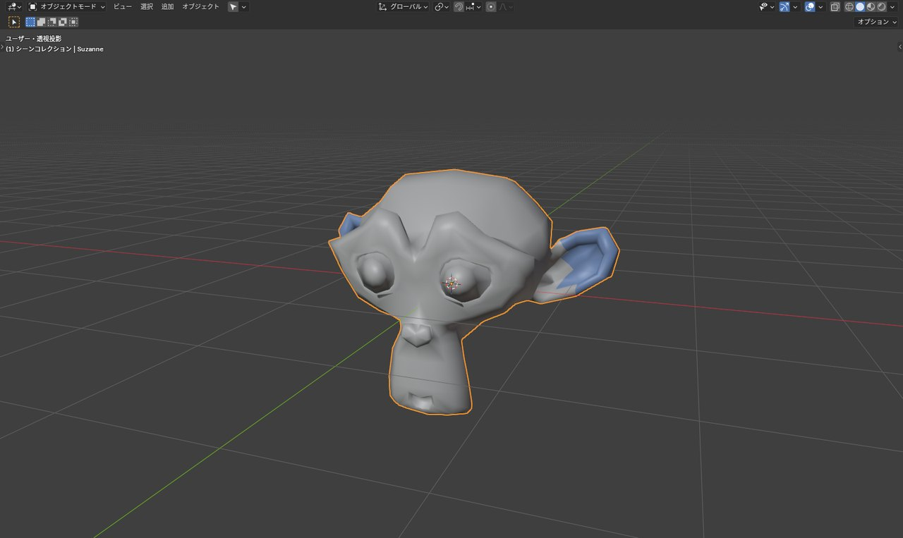
- スザンヌを編集モードにし、両方の耳の面を選ぶ
- 「Smart ID」タブ →「ID / チャンネルライブラリ」で「新規項目タイプ」を「マテリアルID」にして「追加」を押す
- 「割り当て設定」を開き、「マテリアル対象」を「選択した面」にする
- 「選択へ適用」を押す
見どころ：耳の面だけが、項目の表示色のマテリアルに変わります。ほかの面は変わりません。
実例選んだ物を 1 つのコレクションにまとめる（3 つのスザンヌとアウトライナーで試した様子）
項目の「グループ名」の名前でコレクションを作り、選んだスザンヌを入れます。結果はアウトライナーで確かめます。
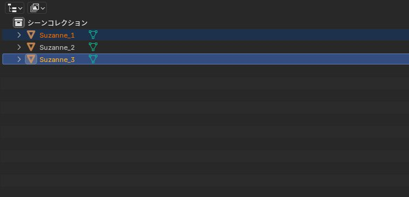
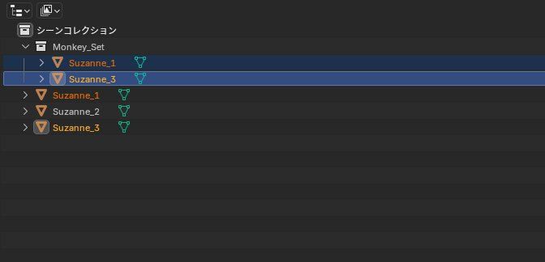
- 左と右のスザンヌを選ぶ
- 「ID / チャンネルライブラリ」の「新規項目タイプ」を「選択セット」にして「追加」を押す
- 「選択項目」の「グループ名」に「Monkey_Set」と入れる
- 「割り当て設定」を開き、「選択コレクション作成」を押す
見どころ：「Monkey_Set」というコレクションができ、選んでいた 2 つがその中に入ります。元の場所にも入ったままです。
5-5. 選択 / 割り当て操作
一覧の項目、または検査の行を使って、選ぶ・付ける・外すをする見出しです。上と下の 2 つの枠に分かれています。
場所「割り当て設定」の下です。初めから開いています。
| 表示 | 働き |
|---|---|
| 全体リスト | 上の枠です。「ID / チャンネルライブラリ」で選んでいる項目が対象です。枠の中に項目の名前が出ます。 |
| オブジェクト選択 | 項目に一致するオブジェクトを選択します。 |
| エレメント選択 | 項目に一致するメッシュのエレメントを選びます。マテリアル ID なら一致する面、頂点グループなら所属する頂点です。 |
| 選択へ適用／選択から解除 | 項目を、「割り当て設定」の「対象範囲」のオブジェクトへ付けます／そのオブジェクトから外します。 |
| 一致選択解除 | 項目に一致するオブジェクトやエレメントを、今の選択から外します。選択だけが変わり、データは消えません。 |
| 選択中リスト | 下の枠です。「選択オブジェクト検査」で選んでいる行が対象です。検査の一覧がまだ無い時は「選択オブジェクト内データが表示されていません。オブジェクトを選択して更新してください。」という案内が出ます。 |
| 所有オブジェクトを選択 | その行を持っているオブジェクトを選び、アクティブにします。 |
| 項目エレメント選択 | その行が表すオブジェクト、またはメッシュのエレメントを選びます。 |
| 項目を選択へ割り当て／項目を選択から解除 | その行の ID・チャンネル・マテリアル・グループを、一覧に登録しないまま今の選択へ付けます／外します。 |
実例マテリアル ID が付いた面を選び直す（エレメント選択）（スザンヌで試した様子）
耳にマテリアル ID が付いているスザンヌを編集モードにし、一覧の項目から、その ID が付いた面を一度に選びます。
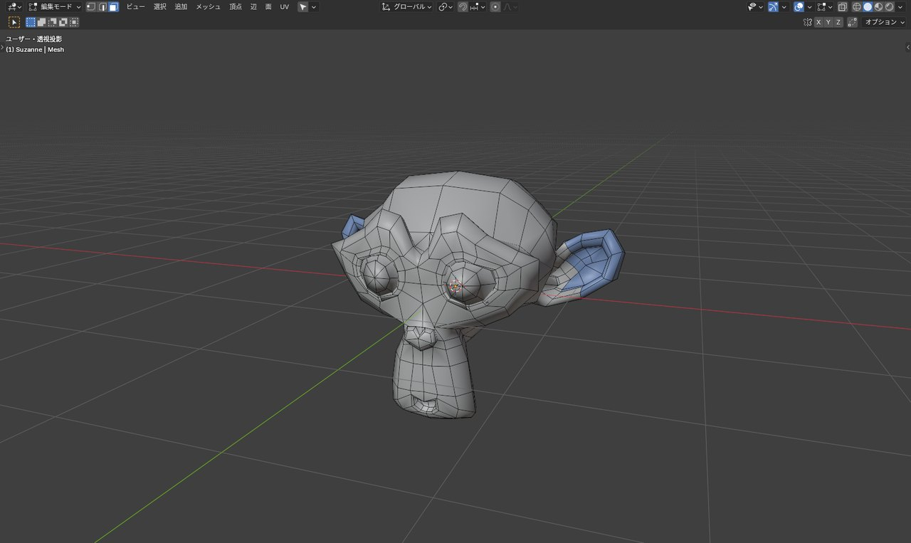
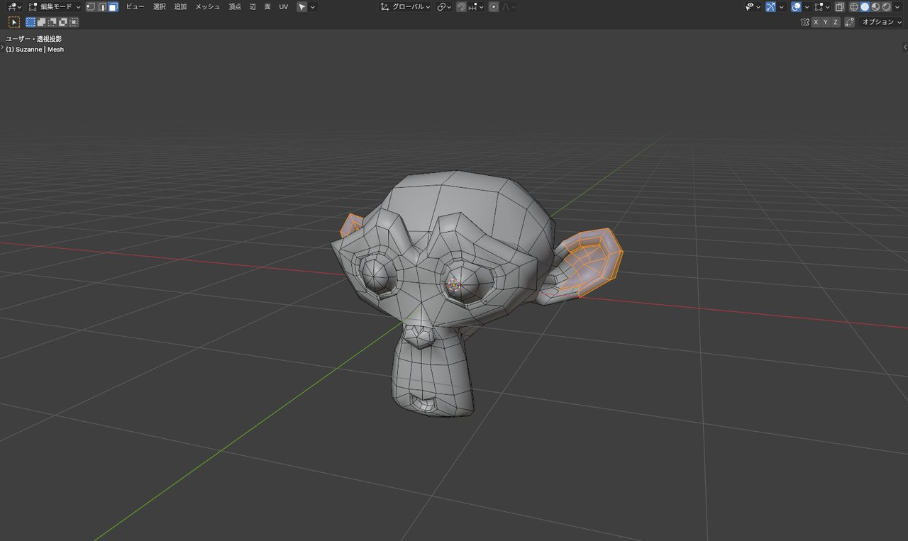
- スザンヌを編集モードにし、何も選んでいない状態にする
- 「Smart ID」タブ →「ID / チャンネルライブラリ」で、耳に付けたマテリアル ID の項目を選ぶ
- 「選択 / 割り当て操作」の上の枠（全体リスト）の「エレメント選択」を押す
見どころ：その ID のマテリアルが入っている耳の面だけが選ばれます（オレンジ色）。手で 1 つずつ選び直す必要がありません。
5-6. マップ / 属性チャンネル
選んだ項目のチャンネル（UV マップや属性）を、メッシュに作ったり消したりする見出しです。
場所「選択 / 割り当て操作」の下です。初めは閉じています。
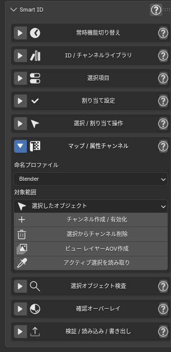
| 表示 | 働き |
|---|---|
| 命名プロファイル | 自動で付くチャンネル名の決まりを、「Blender」「3ds Max」「Maya」「Mari」「ZBrush」「Cinema 4D」「LightWave」「カスタム」から選びます。今ある名前は変わりません。 |
| 対象範囲 | 「割り当て設定」と同じ欄です。作る・消す先のオブジェクトを選びます。 |
| チャンネル作成 / 有効化 | 選んだ項目の UV マップ・マップチャンネル・カラー属性・ジオメトリ属性・頂点グループ（ウェイトグループ）を、対象のメッシュに作るか、有効にします。「UDIMタイル」の項目では、タイル番号をメッシュに記録します。 |
| 選択からチャンネル削除 | 選んだ項目のチャンネルを、対象のメッシュから消します。ロック中の項目は守られます。オブジェクト ID とマテリアル ID は変わりません。 |
| ビュー レイヤーAOV作成 | 「レンダーAOV」の項目から、ビューレイヤーの AOV（レンダーで追加で出す画像の出口）を作ります。AOV の名前は「書き出しタグ」、空なら項目の名前です。 |
| アクティブ選択を読み取り | アクティブなオブジェクトの今のパス番号・マテリアル・UV マップ・カラー属性・ジオメトリ属性・頂点グループを、項目の種類に合わせて項目へ読み込みます。 |
実例選んだ 2 つのスザンヌにだけカラー属性を作る（3 つのスザンヌで試した様子）
「カラー属性」の項目を作り、選んだスザンヌのメッシュに、その名前のカラー属性を作ります。確認オーバーレイを出しておくと、属性ができた物にだけ枠と印が出るので、どれに作られたかが分かります。
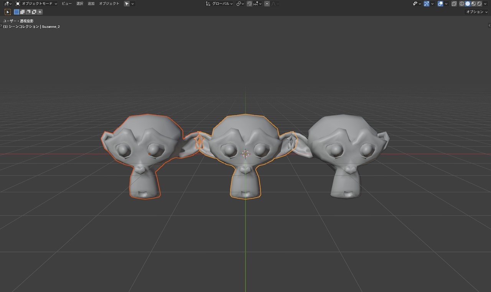
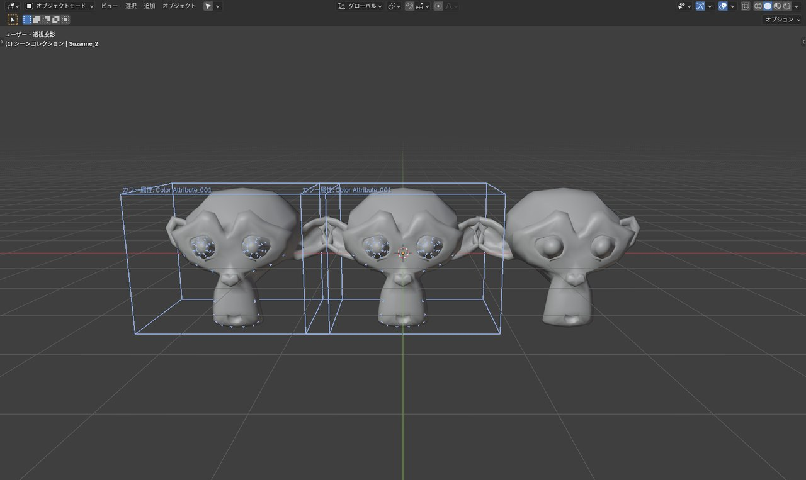
- 「常時機能切り替え」で「オーバーレイ有効」を「有効」にし、「ライブラリ判定範囲」を「シーンオブジェクト」にする
- 左と真ん中のスザンヌを選ぶ
- 「ID / チャンネルライブラリ」の「新規項目タイプ」を「カラー属性」にして「追加」を押す
- 「マップ / 属性チャンネル」を開き、「対象範囲」が「選択したオブジェクト」であることを確かめて、「チャンネル作成 / 有効化」を押す
見どころ：選んでいた左と真ん中にだけ枠と十字の印、「カラー属性: 項目名」のラベルが出ます。右のスザンヌには作られていないので、何も出ません。
5-7. 選択オブジェクト検査
選んだオブジェクトの中にある ID・マテリアルスロット・UV・属性・グループ・SmartID Suite の記録を一覧にして、その場で直す見出しです。
場所「マップ / 属性チャンネル」の下です。初めは閉じています。
| 表示 | 働き |
|---|---|
| 検査範囲 | 調べる物を「選択したオブジェクト」（選んでいる全部）か「アクティブオブジェクト」（1 つだけ）から選びます。 |
| 検査表示タイプ／検査検索 | 一覧をデータの種類で絞ります。「検査検索」に文字を入れると、名前・値・メモを、画面に出ている言葉で探せます（日本語でも、Blender の英語の名前でも当たります）。 |
| 選択データ更新 | 今の選択を調べて、一覧を作り直します。下に「検査中: 2 / Cube, Light」のように、調べたオブジェクトの数と名前が出ます。 |
| 一覧の行 | 左から、複数選択のチェック、種類の印、名前、値が並びます。持ち主のオブジェクトの列は、サイドバーを広げると出ます。消せない行には鍵の印が付きます。行が多い時は、一覧の上に表示しきれなかった数が出ます（元のデータは変わりません）。値の欄は「パス番号=0」「スロット=0, パス番号=0」「ベクトル / ポイント」のように、値の種類と置き場所を日本語で出します。カスタムプロパティの名前はそのまま出ます。空のマテリアルスロットの名前は「空のスロット 1」のように出ます。 |
| 一覧の下のアイコンボタン | 一覧のすぐ下に横に並ぶ、文字の無いボタンです。左から、「所有オブジェクトを選択」「項目エレメント選択」「Smart ID項目化」「項目設定を適用」「項目を削除 / 解除」と同じ働きです。マウスを重ねると名前が出ます。 |
| 選択数／表示中を選択／選択解除／選択項目を削除 | チェックした行の数と、その操作です。「選択項目を削除」はチェックした行のデータを持ち主からまとめて消すか外します。守られている行は飛ばします。 |
| 選択データ項目 | 選んだ行の詳しい情報の枠です。種類、「所有オブジェクト」「所有データ」、今の値の短いまとめ（「値」）などが出ます。行によって「スロット番号」「属性タイプ」「ドメイン」も出ます。オブジェクトの行では「オブジェクトタイプ」も出ます。 |
| 名前 / チャンネル／ID番号／マップチャンネル／表示色／アクティブ／レンダー | 行の種類に応じて出る、直せる欄です。「名前 / チャンネル」は、名前の無いデータでは空です。「アクティブ」はその UV や属性などを使用中にし、「レンダー」はその UV マップをレンダー用にします。直した後に「項目設定を適用」を押すと、実際のデータへ書き戻します。 |
| 保護中 | 消してはいけない属性などの行に出ます。この行は削除できません。 |
| 項目設定を適用 | 上の欄で直した内容を、行が表す Blender のデータへ書き戻します。 |
| アクティブSmart IDから設定 | 一覧で選んでいる項目の設定を、この行のデータだけに当てます。 |
| Smart ID項目化 | この行から一覧の項目を作ります。すでにあればその項目を選びます。 |
| 項目を削除 / 解除 | この行のデータを持ち主から消すか外します。保護中の行は変えません。 |
- 3D ビューで調べたいオブジェクトを選びます。
- 「選択データ更新」を押します。
- 一覧で行を選び、下の欄で名前などを直します。
- 「項目設定を適用」を押します。
実例検査の一覧から UV マップの名前を直す（立方体とサイドバーの検査の一覧で試した様子）
立方体の中身を検査の一覧に出し、UV マップの行を選んで名前を直します。立方体には、値の見え方が分かるように属性「wear」を足してあります。
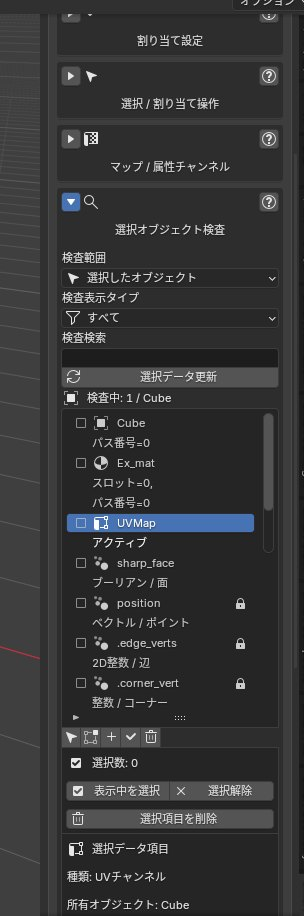
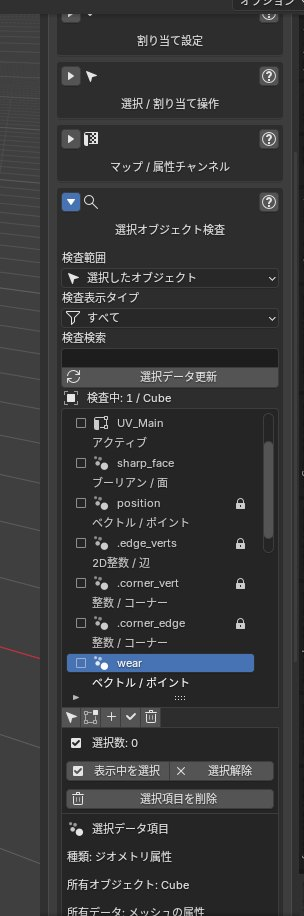
- 立方体を選び、「選択オブジェクト検査」を開いて「選択データ更新」を押す
- 一覧で UV マップの行（UVMap）を押して選ぶ
- 下の「名前 / チャンネル」に「UV_Main」と入れる
- 「項目設定を適用」を押す
- 一覧で属性の行（wear）を押すと、下に属性タイプとドメインが出る
見どころ：一覧の名前が「UV_Main」に変わり、メッシュの UV マップの名前も実際に変わります。属性の行では、値の種類と置き場所が「ベクトル / ポイント」のように出ます。
5-8. 確認オーバーレイ
3D ビューに色付きの枠や印を重ねて、割り当てを目で確かめる見出しです。マテリアルやメッシュのデータは変えません。
場所「選択オブジェクト検査」の下です。初めは閉じています。描くかどうかは「常時機能切り替え」の「オーバーレイ有効」で決めます。
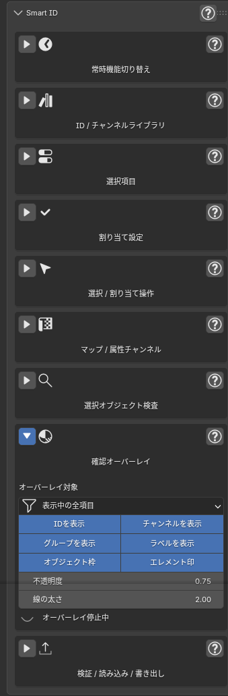
| 表示 | 働き |
|---|---|
| オーバーレイ対象 | 描く行を「アクティブ項目」「表示中の全項目」「検査リスト項目」「表示項目 + 検査リスト」から選びます。初めは「表示中の全項目」です。「表示中の全項目」は、一覧に今出ている行のうち有効の物を描きます。「ライブラリ判定範囲」が選択かアクティブの時は、その範囲のオブジェクトにだけ枠が出ます。シーン全部に枠を出すには「シーンオブジェクト」にします。無効の項目は描きません。 |
| IDを表示／チャンネルを表示／グループを表示 | ID の行、チャンネル・属性の行、選択セット・頂点グループの行を、それぞれ描くかを決めます。 |
| ラベルを表示 | 枠の角に、「オブジェクトID: Object ID_001」のように種類と名前を文字で出します。文字の色は枠と同じです。 |
| オブジェクト枠 | 一致するオブジェクトを色付きの箱で囲みます。箱の色は項目の「表示色」です。検査リストの UV・属性など表示色の無い行は、名前から作った色になります。 |
| エレメント印 | 一致する面や頂点の位置に、短い線で小さな色の十字を描きます（1 つの物につき 80 か所まで）。印は確認用で、選択ではありません。 |
| 不透明度／線の太さ | 色の濃さと、枠の線の太さです。 |
| オーバーレイ表示中／オーバーレイ停止中 | 今描いているかどうかの表示です。 |
実例ID が付いた物を 3D ビューの枠で確かめる（3 つのスザンヌで試した様子）
オブジェクト ID を付けた 3 つのスザンヌに、確認オーバーレイを出します。ID が付いている物が、色付きの箱で囲まれて画面に出ます。
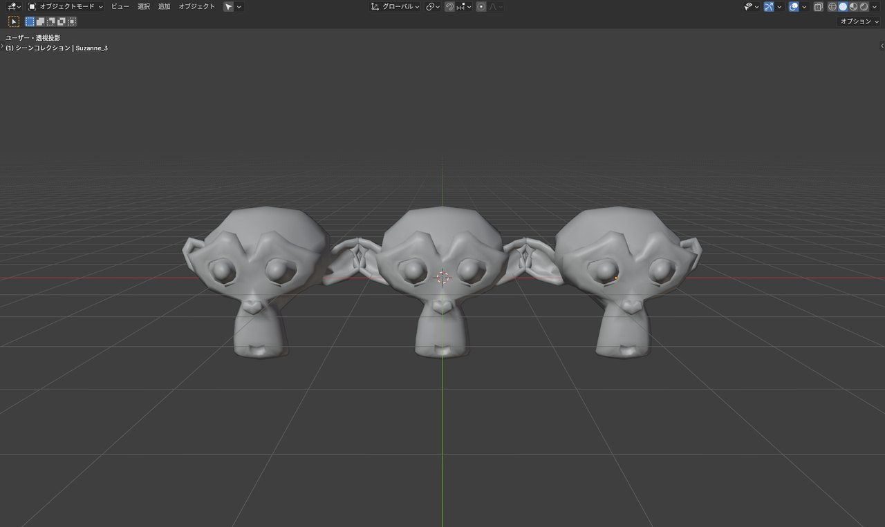
- 「ID / チャンネルライブラリ」の「ライブラリ判定範囲」を「シーンオブジェクト」にする（シーン全部に枠を出すため）
- 「Smart ID」タブ →「常時機能切り替え」で「オーバーレイ有効」のボタンを押して「有効」にする
- 「確認オーバーレイ」を開き、「オブジェクト枠」が入っていることを確かめる（ここでは「ラベルを表示」は切っています）
見どころ：ID が付いた物ごとに、項目の表示色の箱が出ます。見た目の確認用で、マテリアルやデータは変わりません。
実例枠と一覧が、選んでいる物に揃う様子を見る（3 つのスザンヌとサイドバーの一覧で試した様子）
「オーバーレイ対象」が「表示中の全項目」の時、枠は一覧に合わせて出ます。「ライブラリ判定範囲」を切り替え、選ぶ物を変えると枠がどう変わるかを見ます。
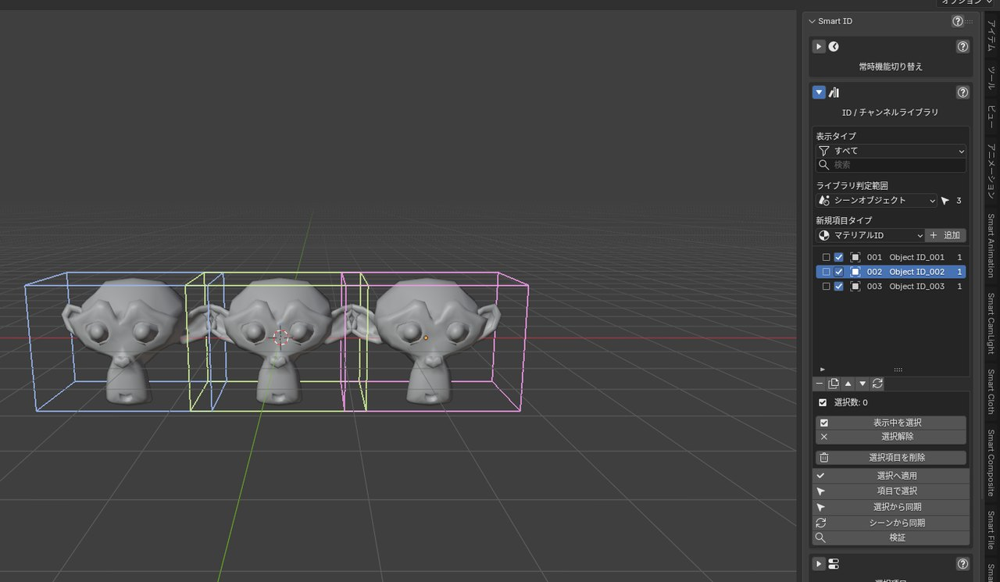
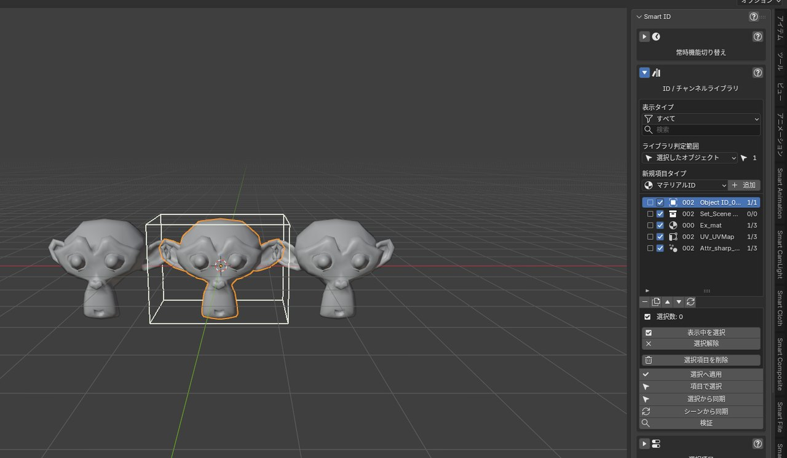
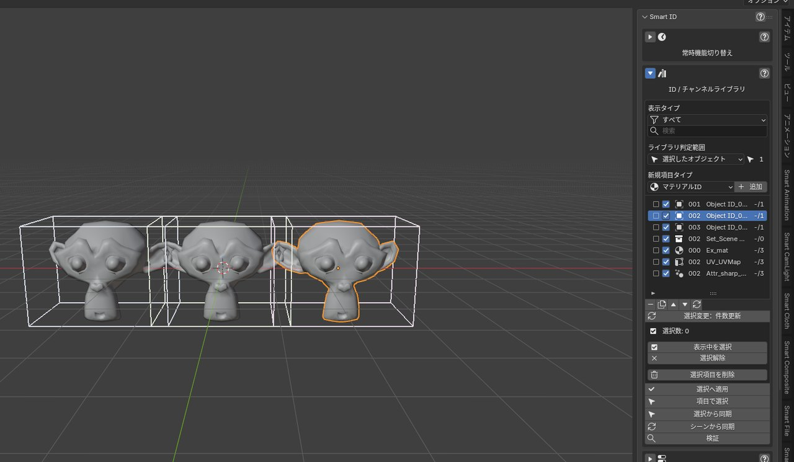
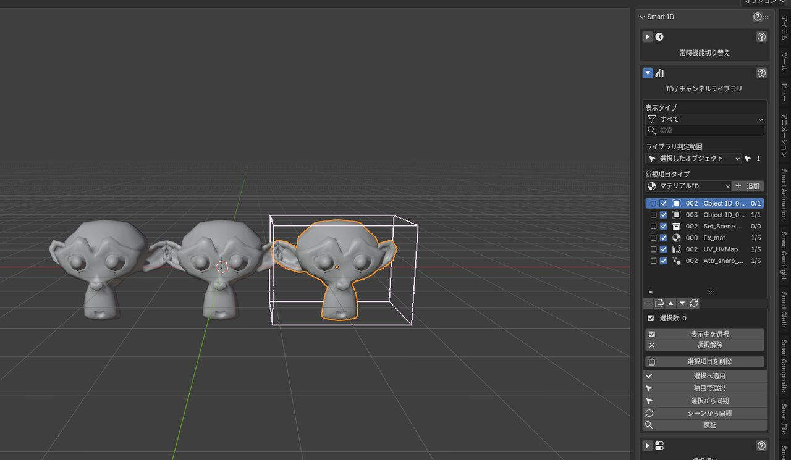
- 3 つのスザンヌに、それぞれオブジェクト ID を付ける
- 「確認オーバーレイ」の「チャンネルを表示」と「グループを表示」を切り、「オーバーレイ有効」を「有効」にする
- 「ライブラリ判定範囲」を「シーンオブジェクト」にする
- 一覧で真ん中のスザンヌの項目の行を押し、「ライブラリ判定範囲」を「選択したオブジェクト」にして、真ん中のスザンヌを選び、「選択変更：件数更新」を押す
- 右のスザンヌを選ぶ
- もう一度「選択変更：件数更新」を押す
見どころ：枠は一覧に今出ている行の分だけ、判定範囲の物にだけ出ます。選び直した直後は一覧が全部の行に戻るので、枠も全部に出ます。件数を更新すると、また選んでいる物だけになります。
実例枠に名前を出し、表示色で枠の色を変える（3 つのスザンヌで試した様子）
確認オーバーレイの枠に、種類と項目名のラベルを出します。枠とラベルの色は項目の「表示色」なので、表示色を変えると枠の色も変わります。
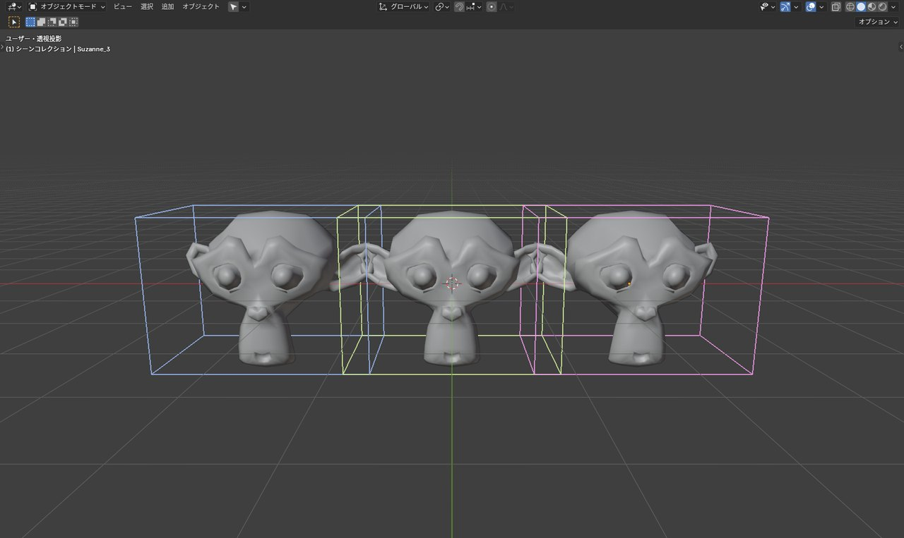
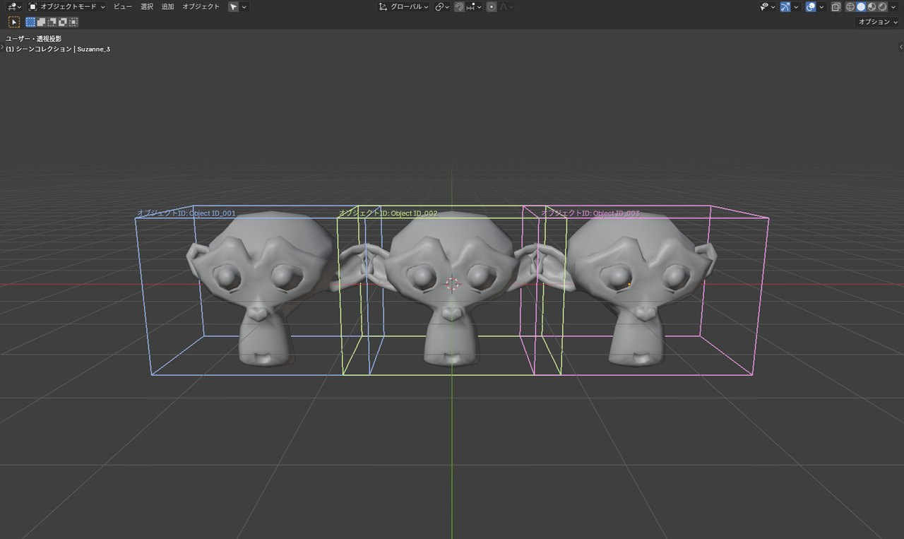
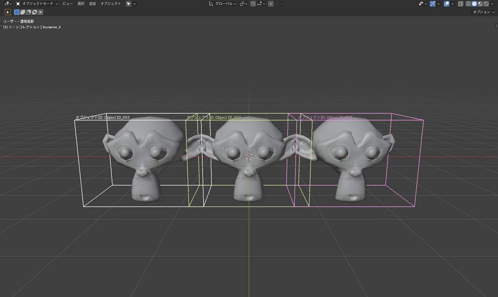
- ID を付けた状態で「オーバーレイ有効」を「有効」にする
- 「ID / チャンネルライブラリ」の「ライブラリ判定範囲」を「シーンオブジェクト」にする（シーン全部に枠を出すため）
- 「確認オーバーレイ」の「ラベルを表示」を入れる
- 一覧で左のスザンヌの項目を選び、「選択項目」の「表示色」を白にする
見どころ：各枠の角に「オブジェクトID: 項目名」と出ます。色を変えた項目だけ、枠とラベルが白くなります。
実例ID が付いた面の位置に印を出す（エレメント印）（スザンヌで試した様子）
耳の面にマテリアル ID を付けたスザンヌに、確認オーバーレイの「エレメント印」を出します。どの面に付いているかが、小さな十字の印で分かります。枠と印の色は項目の「表示色」なので、耳の色と見分けやすい白にします。
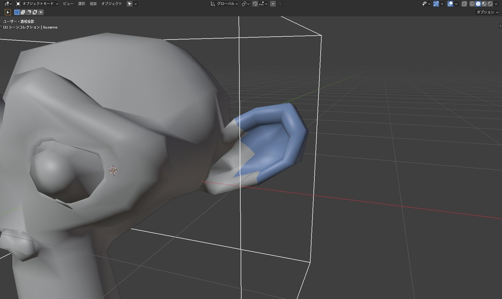
- 耳の面にマテリアル ID を付け、「オーバーレイ有効」を「有効」にする
- 「選択項目」の「表示色」を白にする
- 「確認オーバーレイ」の「エレメント印」が入っていることを確かめる（ここでは「ラベルを表示」は切っています。「前」の図は、比べるために「エレメント印」も切って撮りました）
見どころ：枠の中で、ID が付いた耳の面にだけ白い小さな十字が並びます。印は確認用で、選択やデータは変わりません。
5-9. 検証 / 読み込み / 書き出し
一覧の並べ替え、番号の振り直し、検証、ファイルへの書き出しと読み込みをする見出しです。
場所いちばん下の見出しです。初めは閉じています。
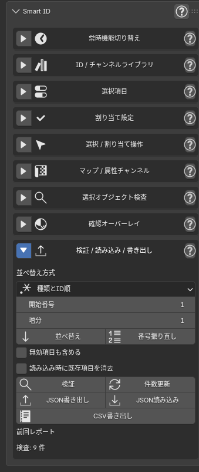
| 表示 | 働き |
|---|---|
| 並べ替え方式／並べ替え | 「マニュアル」「種類とID順」「ID番号順」「名前」から選び、「並べ替え」で一覧を並べ替えます。初めは「種類とID順」です。 |
| 開始番号／増分／番号振り直し | 「番号振り直し」で、項目の番号を開始番号から増分ずつ振り直します。対象は、いちばん左のチェックで選んだ行（無ければ全部の行）のうち、ロックしていない項目で、「表示タイプ」に合う物です。増分を 1 より大きくすると、後から入れる番号の隙間が残ります。 |
| 無効項目も含める | 入れると、書き出しと検証で無効の項目も含めます。 |
| 読み込み時に既存項目を消去 | 入れると、JSON を読み込む前に今の一覧を消します。切っておくと、今の一覧に足します。 |
| 検証／件数更新 | 「検証」は一覧を調べます。「件数更新」は、各項目に一致する数を数え直します。判定範囲が選択かアクティブの時は、選んでいる物にあって一覧に無い ID・チャンネルを行として足します。選んでいる行は変わりません。 |
| JSON書き出し／JSON読み込み | 一覧を JSON ファイルに書き出します／JSON ファイルから読み込みます。 |
| CSV書き出し | 一覧を表計算ソフトで見られる CSV ファイルに書き出します。 |
| 前回レポート | 最後に行った操作の結果が短く出ます。JSON が読み込めない時は理由も出ます。UI の言語を切り替えると消えます。 |
6. よく使う手順
オブジェクトに ID 番号を付ける
合成で使うオブジェクト ID を、決めた番号でオブジェクトに付けます。
- 「ID / チャンネルライブラリ」の「新規項目タイプ」を「オブジェクトID」にして、「追加」を押します。
- 「選択項目」で「名前」と「ID番号」を決めます。
- 3D ビューで ID を付けたいオブジェクトを選びます。
- 「割り当て設定」を開き、「対象範囲」を「選択したオブジェクト」にします。「Blenderパス番号へ書き込み」が入っていることを確かめます。
- 「選択へ適用」を押します。
結果：選んだオブジェクトのパス番号に ID 番号が書かれ、項目の「表示色」がオブジェクトのビューポートの色にも入ります。「選択項目」の「シーン一致」の数も増えます。
今のファイルの ID を一覧にする
受け取ったファイルにある ID やチャンネルを、まとめて一覧に入れます。
- 「ID / チャンネルライブラリ」を開きます。
- ファイル全体を調べる時は「シーンから同期」を、選んだ物だけの時はオブジェクトを選んで「選択から同期」を押します。
- 全部を見たい時は「ライブラリ判定範囲」を「シーンオブジェクト」にします。
結果：まだ一覧になかった ID・UV・属性・グループが項目として足されます。
複数のオブジェクトに同じ UV マップを作る
- 「新規項目タイプ」を「UVチャンネル」にして、「追加」を押します。
- 「選択項目」の「UVマップ」に作りたい名前を入れます。
- 3D ビューで対象のオブジェクトをまとめて選びます。
- 「マップ / 属性チャンネル」を開き、「対象範囲」が「選択したオブジェクト」であることを確かめて、「チャンネル作成 / 有効化」を押します。
結果：選んだメッシュすべてに、その名前の UV マップができるか、すでにあれば有効になります。
選んだオブジェクトの中身を調べて直す
- 3D ビューでオブジェクトを選びます。
- 「選択オブジェクト検査」を開き、「選択データ更新」を押します。
- 一覧で直したい行を選び、「名前 / チャンネル」などを直します。
- 「項目設定を適用」を押します。
結果：UV マップや頂点グループなどの実際のデータが、直した名前・番号に変わります。
ID の一覧を別のファイルで使う
- 「検証 / 読み込み / 書き出し」を開き、「JSON書き出し」を押して保存先を選びます。
- 別の Blender ファイルを開きます。
- 今の一覧に足す時は「読み込み時に既存項目を消去」を切ったまま、入れ替える時は入れてから、「JSON読み込み」を押してファイルを選びます。
結果：同じ名前・番号の項目が、別のファイルの一覧に入ります。
割り当てを色で確かめる
- 「常時機能切り替え」を開き、「オーバーレイ有効」を「有効」にします。
- 「確認オーバーレイ」を開き、「オーバーレイ対象」を選びます。シーン全部に枠を出す時は、「ID / チャンネルライブラリ」の「ライブラリ判定範囲」を「シーンオブジェクト」にします。
- 見たい物に合わせて「IDを表示」「チャンネルを表示」「グループを表示」を切り替えます。
結果：3D ビューで、一致するオブジェクトが色付きの枠で囲まれます。「ラベルを表示」が入っていれば、名前の文字も表示されます。
7. 困った時
- 登録したはずの項目が一覧に出ません。
- 「ライブラリ判定範囲」が「選択したオブジェクト」か「アクティブオブジェクト」だと、選んでいる物に含まれる項目だけが出ます。まだどこにも使っていない項目と、選んでいる行・チェックした行は、いつでも出ます。選択を変えた後は、「選択変更：件数更新」を押すまで全部の行が出ます。「シーンオブジェクト」にすると全部出ます。「表示タイプ」と検索の文字も確かめてください。逆に、選んでいる物に一致するオブジェクト ID の行は、「表示タイプ」や検索に合わなくても一覧に残ります。
- 一覧の数が「-/1」のように出ます。
- 選択を変えた後で、まだ数え直していないという意味です。一覧の下の「選択変更：件数更新」を押すと、今の選択で数え直して、行を絞ります。
- 「選択へ適用」を押しても何も変わりません。
- 無効の項目とロック中の項目は付けません。「選択項目」の「有効」と「ロック」を確かめてください。「割り当て設定」の「対象範囲」にオブジェクトが入っているか（たとえば何か選んでいるか）も確かめてください。
- 「選択オブジェクト検査」の一覧が空です。
- 初めは「検査の自動更新」が「無効」なので、自動では作られません。オブジェクトを選んで「選択データ更新」を押してください。
- 「検証」の結果はどこで見られますか。
- テキスト「Smart ID Suite Validation」に書かれます。テキストエディターで開いて見てください。項目の数と警告の数は「前回レポート」にも出ます。
- 項目を消せません。
- ロック中の項目は削除から守られています。「選択項目」の「ロック」を切ってから消してください。
- オーバーレイの枠が一部の物にしか出ません。
- 「オーバーレイ対象」が「表示中の全項目」の時、枠は一覧に合わせて描きます。「ライブラリ判定範囲」が「選択したオブジェクト」か「アクティブオブジェクト」だと、その範囲の物にだけ枠が出ます。シーン全部を見る時は「シーンオブジェクト」にしてください。
- オーバーレイはレンダーに写りますか。
- 写りません。3D ビューにだけ描く確認用の表示で、マテリアルやメッシュのデータも変えません。
- JSON を読み込めません。
- 読み込めない時は、「前回レポート」の行に理由が日本語で出ます。中身に誤りがあると、読み込み全体を取りやめます。
- パネルに「再起動が必要です」と出ました。
- SmartID Suite が使う部品（クラスやプロパティ）が、別の物としてすでに登録されていたため、安全のために機能を止めた状態です。Blender を再起動してから使ってください。
アドオンが出ない・日本語にならない、など全部のアドオンに共通のことは、全体仕様書の「困った時」を見てください。
8. 用語集
- 項目
- 一覧の 1 行です。1 つの ID やチャンネルの決まり（種類・名前・番号・色など）を持ちます。
- パス番号
- オブジェクトやマテリアルに付ける番号です。レンダー後の合成で、物を見分けるのに使います。
- マテリアルスロット
- オブジェクトがマテリアルを入れておく枠です。1 つのオブジェクトに複数持てます。
- UV マップ
- テクスチャを貼るための、立体を平らに開いた座標です。1 つのメッシュに複数持てます。
- マップチャンネル
- 3ds Max で使う番号付きの UV の呼び方です。このアドオンでは番号として記録し、UV マップの名前と対応させます。
- 属性
- メッシュの頂点や面などに持たせる値です。色を持つ物をカラー属性と呼びます。
- ドメイン
- 属性の値をどこに持たせるかです。頂点（ポイント）、辺、面、コーナー（面の角）があります。
- 頂点グループ
- メッシュの頂点に名前を付けてまとめた物です。
- コレクション
- オブジェクトをまとめるフォルダーのような物です。選択セットはコレクションとして作られます。
- UDIM
- テクスチャを 1001、1002…と番号の付いた複数のタイルに分けて使う方法です。
- AOV
- レンダーで、普通の画像とは別に追加で出す画像の出口です。
- Cryptomatte
- レンダー後に物ごとのマスクを取り出すための仕組みです。
- カスタムプロパティ
- オブジェクトやマテリアルに自由に付けられる名前付きの値です。
- アクティブ
- 選んでいる物の中で、いちばん最後に選んだ 1 つです。
9. 付録：版と確認値・できないこと
| アドオン | SmartID Suite（smart_id_suite） |
|---|---|
| 版 | 1.0.0 |
| ZIP | SmartIDSuite_1.0.0.zip |
| 大きさ | 125,532 バイト |
| SHA256 | a96f1ea871f8f3278cc5b2444137ba3d0dabcc8e6e1c0f47a7d55055f3567a71 |
できないこと・注意
- 確認オーバーレイは 3D ビューにだけ描かれます。レンダーには写りません。
- すでにある属性の値の種類やドメインは、検査で見るだけです。変えられません（Blender が作った時に固定するためです）。
- カラー属性は「ポイント」か「コーナー」にだけ作れます。
- ロック中の項目は、削除・番号振り直しなどの対象になりません。
- JSON の読み込みでは、中身に誤りがあると読み込み全体を取りやめます。
- CSV は書き出しだけです。CSV からの読み込みはありません。
- 検査の一覧は、行が多い時に一部だけを表示します。表示しきれない行も元のデータは変わりません。
- 1 つのオブジェクトが持てるカスタム ID・Cryptomatte タグの識別は、最後に付けた 1 つだけです。カスタム ID の後に Cryptomatte タグを同じ物へ付けると、カスタム ID の行は一致しなくなります。
- オブジェクトがシーン直下にだけある時、シーンコレクションの行（Set_Scene Collection）は数が 0/0 のまま一覧に残ります。
SmartID Suite 解説書 v1.0.0 ／ 2026-11-18 作成